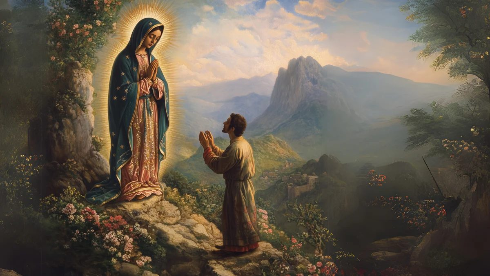
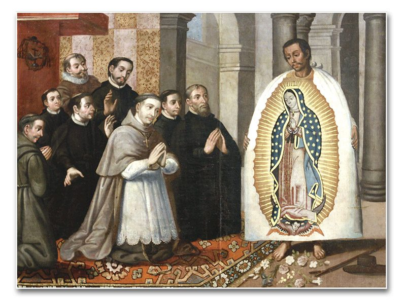
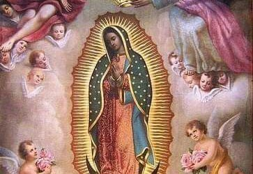
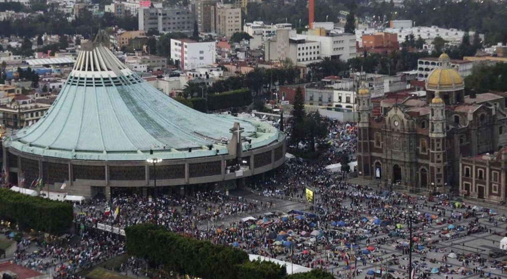

Historia y Origen

En los primeros años de la evangelización del Nuevo Mundo, cuando la memoria de la conquista todavía dolía en el corazón de los pueblos indígenas, ocurrió en las colinas del Tepeyac uno de los acontecimientos marianos más extraordinarios de la historia de la Iglesia. Era el 9 de diciembre de 1531 cuando Juan Diego Cuauhtlatoatzin, un indígena chichimeca converso de unos cincuenta y siete años, escuchó música celestial y vio a una joven de aspecto indígena rodeada de luz. La Señora le habló en náhuatl, su propia lengua, y le pidió que acudiera al obispo de México, fray Juan de Zumárraga, para transmitirle su deseo de que se construyera un templo en ese lugar.
Juan Diego cumplió el encargo, pero el obispo, prudente y escéptico, le pidió una señal. En la segunda aparición, el 10 de diciembre, la Señora renovó su petición. Ante la negativa del prelado, Juan Diego regresó al Tepeyac. El 11 de diciembre, preocupado por su tío gravemente enfermo, intentó esquivar a la Señora rodeando el cerro, pero ella le salió al encuentro, le aseguró que su tío sanaría y le ordenó subir a la cumbre del cerro a recoger flores. En pleno diciembre, entre las rocas áridas del cerro, Juan Diego encontró rosas castellanas en plena floración, flores que no crecían en aquella tierra ni en aquella estación. Las recogió en su tilma —el ayate de fibra de agave que usaba como manta y capa— y bajó con ellas a presentarlas al obispo.
El 12 de diciembre de 1531, cuando Juan Diego desplegó su tilma ante fray Juan de Zumárraga para derramar las rosas, ambos hombres quedaron atónitos: en el tejido había aparecido, pintada de manera inexplicable, la imagen de la Señora tal como se había aparecido en el Tepeyac. El obispo cayó de rodillas. La noticia se extendió con una velocidad asombrosa, y en los años siguientes millones de indígenas pidieron el bautismo. Los misioneros, que habían avanzado con dificultad durante una década, se vieron desbordados por la magnitud de la conversión. Se calcula que entre 1532 y 1538 aproximadamente ocho millones de personas abrazaron la fe cristiana, un fenómeno sin precedentes en la historia de la evangelización.
El relato original de las apariciones fue fijado en náhuatl en el Nican Mopohua ("Aquí se cuenta"), un texto del siglo XVI atribuido al sabio indígena Antonio Valeriano, que constituye el documento literario y teológico más importante del guadalupanismo.
La Tilma: el Milaglo Científico

La tilma de Juan Diego, conservada en la Basílica de Guadalupe desde hace casi cinco siglos, ha sido objeto de numerosas investigaciones científicas que han desafiado toda explicación racional. El tejido de fibra de agave, que debería haberse desintegrado en pocas décadas, se conserva íntegro sin ningún proceso de restauración conocido. En 1936, el premio Nobel de Química Richard Kuhn analizó hilos de la tilma y concluyó que los pigmentos empleados no corresponden a ningún colorante animal, vegetal ni mineral conocido en la técnica pictórica del siglo XVI o posterior.
En 1979, el científico Philip Callahan examinó la tilma bajo luz infrarroja y no encontró ningún trazo de boceto ni pincelada, ni tampoco la capa de preparación que cualquier pintura sobre tela requeriría. Las zonas doradas del manto no contienen pigmento alguno: el brillo es producido por la microestructura misma de las fibras, un fenómeno análogo a la iridiscencia de las alas de las mariposas, imposible de reproducir artificialmente en el siglo XVI. Estudios realizados por el astrónomo Enrique Graue revelaron que las 46 estrellas bordadas en el manto de la Virgen corresponden con exactitud milimétrica a la posición de las constelaciones en el cielo de Ciudad de México durante la madrugada del 12 de diciembre de 1531. Y quizá lo más perturbador: oftalmólogos que examinaron en 1979 y años posteriores las pupilas de los ojos de la imagen con microscopios de alta definición identificaron, reflejadas en ellas, las figuras de varias personas —incluidas, posiblemente, Juan Diego y el obispo Zumárraga— con los mismos fenómenos de reflexión triple (imagen de Purkinje-Sanson) que presentan los ojos humanos vivos.
Arte e Iconografía

La imagen de la Virgen de Guadalupe es uno de los iconos religiosos más reconocibles del mundo y está cargada de simbología teológica e intercultural. La Señora aparece de pie, con las manos juntas en actitud de oración, ligeramente inclinada hacia adelante en señal de humildad, lo que en la cultura náhuatl indicaba que ella misma oraba a alguien mayor que ella. Su rostro es de rasgos indígenas mestizos, sereno y compasivo. Viste una túnica rosa con bordados florales —el xochitl o flor de cuatro pétalos, símbolo nahua del centro del universo y de la divinidad— y un manto azul-turquesa tachonado de estrellas de oro, el color reservado a la realeza y a lo divino en el mundo indígena. La luna creciente bajo sus pies evoca el Apocalipsis 12 ("la mujer vestida de sol, con la luna bajo sus pies"). El sol que la rodea la identifica con la mujer del Apocalipsis y, simultáneamente, la sitúa por encima de Tonatiuh, el dios solar azteca. Un ángel con alas bicolor la sostiene en su base, señalando su origen celeste. Sobre su vientre, levemente marcado bajo la túnica, se distingue una flor de cuatro pétalos que los estudiosos interpretan como signo de su maternidad y, en el contexto nahua, como símbolo del quinto sol, la nueva era de la humanidad.
Devoción y Culto Actual

La Basílica de Nuestra Señora de Guadalupe, en el Cerro del Tepeyac al norte de Ciudad de México, es el santuario mariano más visitado del mundo y el segundo recinto religioso más frecuentado del planeta tras el Vaticano. Cada año recibe entre 20 y 22 millones de peregrinos, con una concentración extraordinaria en la noche del 11 y la madrugada del 12 de diciembre, cuando millones de fieles —muchos de ellos procedentes de toda América Latina— convergen en el cerro sagrado con flores, música, danzas y promesas. El edificio actual, diseñado por el arquitecto Pedro Ramírez Vázquez, fue inaugurado en 1976 para albergar a las multitudes, y en su interior la tilma original puede contemplarse desde una cinta transportadora que permite el paso continuo de peregrinos.
El papa Juan Pablo II, devoto guadalupano desde su elección, visitó el santuario cuatro veces y canonizó a Juan Diego Cuauhtlatoatzin el 31 de julio de 2002 en la propia Basílica, convirtiéndolo en el primer indígena americano elevado a los altares. Fue también Juan Pablo II quien, en 1999, proclamó a Nuestra Señora de Guadalupe Patrona de todas las Américas y del movimiento de la nueva evangelización, extendiendo el alcance de su intercesión desde México a todo el continente americano.
Oración a Nuestra Señora de Guadalupe
Nuestra Señora de Guadalupe, Madre de las Américas, te pedimos que intercedas por nosotros ante tu Hijo Jesucristo. Tú que te dignaste aparecer entre nosotros como signo de esperanza y amor, acompáñanos en nuestro camino de fe. Cubre con tu manto a quienes sufren, a los pobres y a los más vulnerables. Que tu imagen estampada en la tilma de Juan Diego siga siendo faro de evangelización para todos los pueblos del continente. Amén.